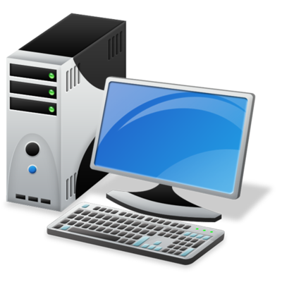
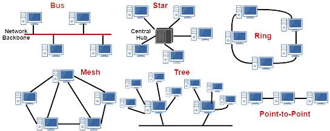

Komputer

komputer adalah Perangkat elektronik yang bisa kita gunakan untuk mengolah data sesuai prosedur yang dari awal sudah dirumuskan dalam sistemnya, sehingga akan menghasilkan informasi yang bermanfaat bagi para penggunanya.
Penggunaan nama Komputer ini berasal dari bahasa latin yaitu “computāre yang memiliki ari “menghitung”. Jadi Komputer bisa juga didefinisikan sebagai perangkat yang digunakan untuk melakukan perhitungan data seperti : Input data, mengolah data (proses) dan menghasilkan informasi sebagai hasil akhirnya.
Selanjutnya
Jaringan Komputer

jaringan komputer adalah dua atau lebih komputer yang terhubung satu sama lain dan digunakan untuk berbagi data. Jaringan komputer dibangun dengan kombinasi hardware dan software.
Untuk membuat jaringan komputer, switch dan router menggunakan berbagai protokol dan algoritma untuk bertukar informasi dan untuk membawa data ke titik akhir yang diinginkan.Setiap titik akhir (kadang disebut host) dalam jaringan memiliki pengenal unik, sering kali alamat IP atau alamat Media Access Control yang digunakan untuk menunjukkan sumber atau tujuan transmisi. Endpoint dapat mencakup server, komputer pribadi, telepon, dan berbagai jenis hardware jaringan.
Selanjutnya
Topologi Jaringan Komputer

Topologi jaringan adalah suatu cara / konsep yang digunakan untuk menghubungkan dua komputer atau lebih, berdasarkan hubungan geometris antara unsur-unsur dasar penyusun jaringan, yaitu node, link, danstation. Pemilihan topologi jaringan didasarkan pada skala jaringan, biaya, tujuan, dan pengguna. Topologi pertama kali yang digunakan adalah topologi bus. setiap topoologi memiliki kekurangan dan kelebihannya masing-masing
Selanjutnya